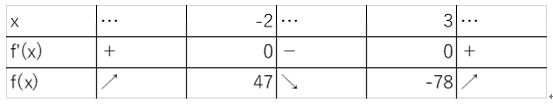
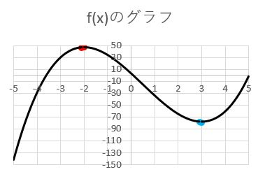

【４．練習問題】
≪問題１≫f(x)=2x3-3x2-36x+3 について以下の問いに答えよ。
(1)f(x)の導関数を求めよ
(2)f(x)の増減を調べ、増減表を作成せよ
【解答】
(1) f’(x)=6x2-6x-36
(2)

【解説】
(1)f(x)の導関数を求めるよ！やり方は第１回を思い出そう
f’(x)=6x2-6x-36
(2)増減を調べたいから
①関数の傾き(微分の値)が０のときのxの値
②その時のf(x)
の２つを求めよう！
①微分の値が0のときのｘはf’(x)=0を解けばいいから
f’(x)= 6x2-6x-36=6(x+2)(x-3)=0
よって、x=-2、x=3 だね！

②その時のf(x)の値だから、実際にf(x)のxに-2と3を代入してみよう
f(-2)= 2×(-2)3-3×(-2)2-36×(-2)+3=47
f(3) =2×33-3×32-36×3+3=-78
そして、この①②の結果を増減表にまとめよう！
一番左のf’(x)の値を知りたいときはf’(x)のxに-2より小さい値を
真ん中のf’(x)の値を知りたいときはf’(x)のxに-2と3の間の値を
一番右のf’(x)の値を知りたいときはf’(x)のxに-2より大きい値を
それぞれ代入して正負を調べよう！
戻る
 数学
英語
物理
国語
地理
MORE
数学
英語
物理
国語
地理
MORE